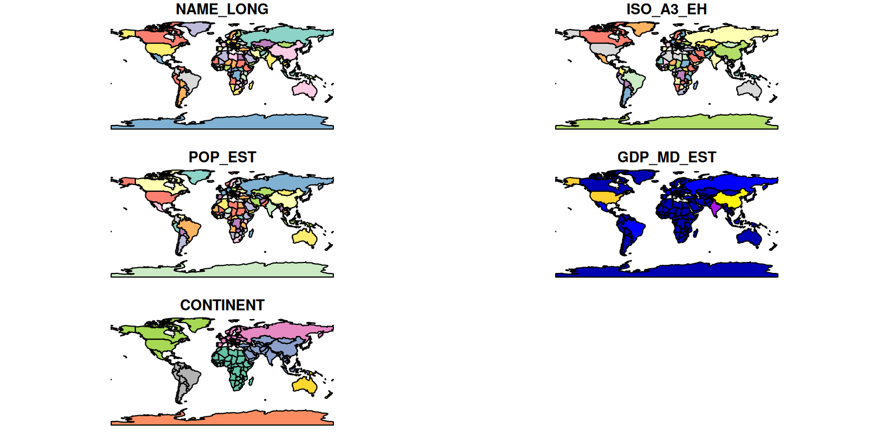
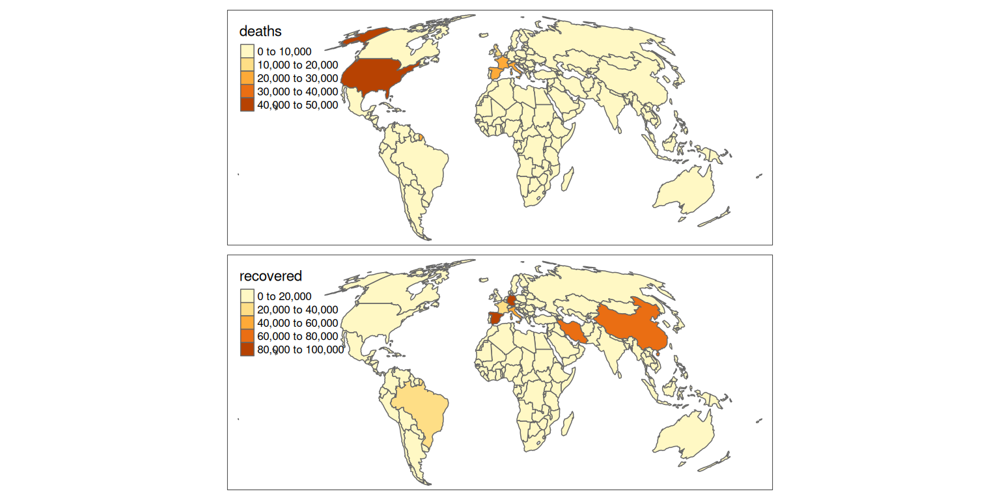

library(sf)Linking to GEOS 3.11.0, GDAL 3.5.2, PROJ 9.0.1; sf_use_s2() is TRUEThe coronavirus pandemic is a global phenomenon that will affect the lives of the majority of the world’s population for years to come. Impacts range from physical distancing measures already affecting more than half of Earth’s population and knock-on impacts such as changes in air quality to potentially life threatening illness, with peer reviewed estimates of infection fatality rates showing the disease disproportionately affects the elderly and people with underlying health conditions.
Like other global phenomena such as climate change, the impacts of the pandemic vary greatly by geographic location, with effective and early implementation of physical distancing measures and effective contact tracing associated with lower death rates, according to preliminary research, as illustrated in the animation below (source: Washington Post).

This article demonstrates how to download and map open data on the evolving coronavirus pandemic, using reproducible R code. The aim is not to provide scientific analysis of the data, but to demonstrate how ‘open science’ enables public access to important international datasets. It also provides an opportunity to demonstrate how techniques taught in Geocomputation with R can be applied to real-world datasets.
Before undertaking geographic analysis of ‘rate’ data, such as the number Covid-19 infections per unit area, it is worth acknowledging caveats at the outset. Simple graphics of complex phenomena can be misleading. This is well-illustrated in the figure below by Will Geary, which shows how the ecological fallacy can affect interpretations of geographical analysis of areal units such countries that we will be using in this research.

The post is intended more as a taster of geographic visualisation in R than as a gateway to scientific analysis of Covid-19 data. See resources such as the eRum2020 CovidR contest and lists of online resources for pointers on how to usefully contribute to data-driven efforts to tackle the crisis.
To reproduce the results presented in this article you will need to have an R installation with up-to-date versions of the following packages installed and loaded. (See the geocompr/docker repo and Installing R on Ubuntu article for more on setting up your computer to work with R).
library(sf)Linking to GEOS 3.11.0, GDAL 3.5.2, PROJ 9.0.1; sf_use_s2() is TRUElibrary(tmap)
library(dplyr)To get data on official Covid-19 statistics, we will use the COVID19 R package.
This package provides daily updated data on a variety of variables related to the coronavirus pandemic at national, regional and city levels. Install it as follows:
install.packages("COVID19")After the package is installed, you can get up-to-date country-level data as follows:
d = COVID19::covid19()To minimise dependencies for reproducing the results in this article, we uploaded a copy of the data, which can be downloaded as follows (re-run the code above to get up-to-date data):
d = readr::read_csv("https://git.io/covid-19-2020-04-23")
class(d)[1] "spec_tbl_df" "tbl_df" "tbl" "data.frame" The previous code chunk read a .csv file from online and confirmed, we have loaded a data frame (we will see how to join this with geographic data in the next section). We can get a sense of the contents of the data as follows:
ncol(d)[1] 24nrow(d)[1] 17572names(d) [1] "id" "date" "deaths" "confirmed"
[5] "tests" "recovered" "hosp" "icu"
[9] "vent" "driving" "walking" "transit"
[13] "country" "state" "city" "lat"
[17] "lng" "pop" "pop_14" "pop_15_64"
[21] "pop_65" "pop_age" "pop_density" "pop_death_rate"We will use a dataset representing countries worldwide from the rnaturalearth package. Assuming you have the package installed you can get the geographic data as follows (see the subsequent code chunk if not):
world_rnatural = rnaturalearth::ne_download(returnclass = "sf")
# names(world_iso) # variables available
world_iso = world_rnatural %>%
select(NAME_LONG, ISO_A3_EH, POP_EST, GDP_MD_EST, CONTINENT)The result of the previous code block, an object representing the world and containing only variables of interest, was uploaded to GitHub and can be loaded from a GeoJSON file as follows:
world_iso = sf::read_sf("https://git.io/JfICT") To see what’s in the world_iso object we can plot it, with the default setting in sf showing the geographic distribution of each variable:
plot(world_iso)
An issue with the result from a data visualisation perspective is that this unprojected visualisation distorts the world: countries such as Greenland at high latitudes appear bigger than the actually are. To overcome this issue we will project the object as follows (see Chapter 6 of Geocomputation with R and a recent article on the r-spatial website for more on coordinate systems):
world_projected = world_iso %>%
st_transform("+proj=moll")We can plot just the geometry of the updated object as follows, noting that the result is projected in a way that preserves the true area of countries (noting also that all projections introduce distortions):
plot(st_geometry(world_projected))
As outlined in Chapter 3 of Geocomputation with R, attribute joins can be used to add additional variables to geographic data via a ‘key variable’ shared between the geographic and non-geographic objects. In this case the shared variables are ISO_A3_EH in the geographic object and id in the Covid-19 dataset d. We will be concise and call the dataset resulting from this join operation w.
w = dplyr::left_join(world_projected, d, by = c("ISO_A3_EH"= "id"))
class(w)[1] "sf" "tbl_df" "tbl" "data.frame"nrow(w)[1] 14919The package sf provides a wide range of functions for calculating geographic variables such as object centroid, bounding boxes, lengths and, as demonstrated below, area. We use this area data to calculate the population density of each country as follows:
w$Area_km = as.numeric(st_area(w)) / 1e6
w$`Pop/km2` = as.numeric(w$POP_EST) / w$Area_km The class of w shows that it has geometries for each row. Notice that it has many more rows of data than the original world object: geometries are repeated for every year. This is not an efficient way to store data, as it means lots of duplicate geometries. On a small dataset that doesn’t matter, but it’s something to be aware of. To check that the join has worked, we will take a subset of rows representing the global situation yesterday relative to the date of data access:
w_yesterday = w %>%
filter(date == max(date, na.rm = T) - 1)
plot(w_yesterday)
The plot method for sf objects is fast and flexible, as documented in sf’s Plotting Simple Features vignette, which can be accessed with vignette("sf5") from the R console. We can set the breaks to better show the difference between countries with no reported deaths and countries with few reported deaths as follows:
plot(w_yesterday["deaths"])
b = c(0, 10, 100, 1000, 10000, 100000)
plot(w_yesterday["deaths"], breaks = b)
To plot the other Covid-19 variables, reporting number of confirmed cases, number of tests and number of people who have recovered, we can subset the relevant variables and pipe the result to the plot() function (noting the caveat that code containing pipes may be hard to debug) as follows:
w_yesterday %>%
dplyr::select(deaths, confirmed, tests, recovered) %>%
plot()
The mapping chapter of Geocomputation with R shows how the tmap package enables publication-quality maps to be created with concise and relatively commands, such as:
tm_shape(w_yesterday) +
tm_polygons(c("deaths", "recovered"))
We can modify the palette and scale as follows:
tm_shape(w_yesterday) +
tm_polygons(
c("deaths", "recovered"),
palette = "viridis",
style = "order"
) 
The map can be further improved by adding graticules representing the curvature of the Earth, created as follows:
g = st_graticule(w_yesterday)It’s also worth moving the legend:
tm_shape(g) +
tm_lines(col = "grey") +
tm_shape(w_yesterday) +
tm_polygons(
c("deaths", "recovered"),
palette = "viridis",
style = "order"
) +
tm_layout(legend.position = c(0.01, 0.25))
A problem with choropleth maps is that they can under-represent small areas. To overcome this issue we can use dot size instead of color to represent number:
tm_shape(g) +
tm_lines(col = "grey") +
tm_shape(w_yesterday) +
tm_polygons() +
tm_layout(legend.position = c(0.01, 0)) +
tm_shape(w_yesterday) +
tm_dots(
col = c("red", "green"),
size = c("deaths", "recovered"),
palette = "viridis"
)
One question I have here: make the size legend have style = "log10_pretty" also?
The animation at the beginning of this article shows how dynamic graphics can communicate change effectively. Animated maps are therefore useful for showing evolving geographic phenomena, such as the spread of Covid-19 worldwide. As covered in section 8.3 of Geocomputation with R, animated maps can be created with tmap by extending the tm_facet() functionality. So let’s start by creating a facetted map showing the total number of deaths on the first day of each month in our data:
w$Date = as.character(w$date)
tm_shape(g) +
tm_lines(col = "grey") +
tm_shape(w_yesterday) +
tm_polygons(
"Pop/km2",
palette = "viridis",
style = "log10_pretty",
n = 3
) +
tm_shape(w %>% filter(grepl(pattern = "01$", date))) +
tm_dots(size = "deaths", col = "red") +
tm_facets("Date", nrow = 1, free.scales.fill = FALSE) +
tm_layout(
legend.outside.position = "bottom",
legend.stack = "horizontal"
)
To create an animated map, following instructions in Chapter 8 of Geocomputation with R, we need to make some small changes to the code above:
m = tm_shape(g) +
tm_lines(col = "grey") +
tm_shape(w_yesterday) +
tm_polygons(
"Pop/km2",
palette = "viridis",
style = "log10_pretty",
n = 3
) +
tm_shape(w %>% filter(grepl(pattern = "01$", date))) +
tm_dots(size = "deaths", col = "red") +
tm_facets(along = "Date", free.coords = FALSE) +
tm_layout(legend.outside = TRUE)
tmap_animation(m, "covid-19-animated-map-test.gif", width = 800)
browseURL("covid-19-animated-map-test.gif")
We made an animated map! The first version is rarely the best though, and the map above clearly could benefit from some adjustments before we plot the results for the whole dataset:
w$Date = paste0("Total deaths from 22nd January 2020 to ", w$date)
m = tm_shape(g) +
tm_lines(col = "grey") +
tm_shape(w) +
tm_polygons(
"Pop/km2",
palette = "viridis",
style = "log10_pretty",
lwd = 0.5
) +
tm_shape(w) +
tm_dots(size = "deaths", col = "red") +
tm_facets(along = "Date", free.coords = FALSE) +
tm_layout(
main.title.size = 0.5,
legend.outside = TRUE
)
tmap_animation(m, "covid-19-animated-map.gif", width = 1400, height = 600)
browseURL("covid-19-animated-map.gif")
This article has demonstrated how to work with and map geographic data using the free and open source statistical programming language R. It demonstrates that by representing analysis in code, research can be made reproducible and more accessible to others, encouraging transparent and open science. This has multiple advantages, from education and citizen engagement with the evidence to increased trust in the evidence on which important, life-or-death, decisions are made.
Although the research did not address any policy issues, it could be extended to do so, and we encourage readers to check-out the following resources for ideas for future research:
d_city = COVID19::covid19(level = 3)For further details on geographic data analysis in R in general, we recommend checkout out in-depth materials such as Geocomputation with R and the in-progress open source book Spatial Data Science.
There is also an online talk on the subject on YouTube.
sessioninfo::session_info()─ Session info ───────────────────────────────────────────────────────────────
setting value
version R version 4.2.2 (2022-10-31)
os Fedora Linux 37 (Thirty Seven)
system x86_64, linux-gnu
ui X11
language (EN)
collate en_US.UTF-8
ctype en_US.UTF-8
tz Europe/Warsaw
date 2022-12-20
pandoc 2.19.2 @ /usr/lib/rstudio/bin/quarto/bin/tools/ (via rmarkdown)
─ Packages ───────────────────────────────────────────────────────────────────
! package * version date (UTC) lib source
P abind 1.4-5 2016-07-21 [?] CRAN (R 4.2.2)
P base64enc 0.1-3 2015-07-28 [?] CRAN (R 4.2.2)
P bit 4.0.5 2022-11-15 [?] CRAN (R 4.2.2)
P bit64 4.0.5 2020-08-30 [?] CRAN (R 4.2.2)
P class 7.3-20 2022-01-16 [?] CRAN (R 4.2.2)
P classInt 0.4-8 2022-09-29 [?] CRAN (R 4.2.2)
P cli 3.4.1 2022-09-23 [?] CRAN (R 4.2.2)
P codetools 0.2-18 2020-11-04 [?] CRAN (R 4.2.2)
P crayon 1.5.2 2022-09-29 [?] CRAN (R 4.2.2)
P crosstalk 1.2.0 2021-11-04 [?] CRAN (R 4.2.2)
P curl 4.3.3 2022-10-06 [?] CRAN (R 4.2.2)
P DBI 1.1.3 2022-06-18 [?] CRAN (R 4.2.2)
P dichromat 2.0-0.1 2022-05-02 [?] CRAN (R 4.2.2)
P digest 0.6.31 2022-12-11 [?] CRAN (R 4.2.2)
P dplyr * 1.0.10 2022-09-01 [?] CRAN (R 4.2.2)
P e1071 1.7-12 2022-10-24 [?] CRAN (R 4.2.2)
P ellipsis 0.3.2 2021-04-29 [?] CRAN (R 4.2.2)
P evaluate 0.19 2022-12-13 [?] CRAN (R 4.2.2)
P fansi 1.0.3 2022-03-24 [?] CRAN (R 4.2.2)
P fastmap 1.1.0 2021-01-25 [?] CRAN (R 4.2.2)
P generics 0.1.3 2022-07-05 [?] CRAN (R 4.2.2)
P glue 1.6.2 2022-02-24 [?] CRAN (R 4.2.2)
P hms 1.1.2 2022-08-19 [?] CRAN (R 4.2.2)
P htmltools 0.5.4 2022-12-07 [?] CRAN (R 4.2.2)
P htmlwidgets 1.6.0 2022-12-15 [?] CRAN (R 4.2.2)
P jsonlite 1.8.4 2022-12-06 [?] CRAN (R 4.2.2)
P KernSmooth 2.23-20 2021-05-03 [?] CRAN (R 4.2.2)
P knitr 1.41 2022-11-18 [?] CRAN (R 4.2.2)
P lattice 0.20-45 2021-09-22 [?] CRAN (R 4.2.2)
P leafem 0.2.0 2022-04-16 [?] CRAN (R 4.2.2)
P leaflet 2.1.1 2022-03-23 [?] CRAN (R 4.2.2)
P leafsync 0.1.0 2019-03-05 [?] CRAN (R 4.2.2)
P lifecycle 1.0.3 2022-10-07 [?] CRAN (R 4.2.2)
P lwgeom 0.2-10 2022-11-19 [?] CRAN (R 4.2.2)
P magrittr 2.0.3 2022-03-30 [?] CRAN (R 4.2.2)
P pillar 1.8.1 2022-08-19 [?] CRAN (R 4.2.2)
P pkgconfig 2.0.3 2019-09-22 [?] CRAN (R 4.2.2)
P png 0.1-8 2022-11-29 [?] CRAN (R 4.2.2)
P proxy 0.4-27 2022-06-09 [?] CRAN (R 4.2.2)
P R6 2.5.1 2021-08-19 [?] CRAN (R 4.2.2)
P raster 3.6-11 2022-11-28 [?] CRAN (R 4.2.2)
P RColorBrewer 1.1-3 2022-04-03 [?] CRAN (R 4.2.2)
P Rcpp 1.0.9 2022-07-08 [?] CRAN (R 4.2.2)
P readr 2.1.3 2022-10-01 [?] CRAN (R 4.2.2)
renv 0.16.0 2022-09-29 [2] CRAN (R 4.2.2)
P rlang 1.0.6 2022-09-24 [?] CRAN (R 4.2.2)
P rmarkdown 2.19 2022-12-15 [?] CRAN (R 4.2.2)
P rstudioapi 0.14 2022-08-22 [?] CRAN (R 4.2.2)
P sessioninfo 1.2.2 2021-12-06 [?] CRAN (R 4.2.2)
P sf * 1.0-9 2022-11-08 [?] CRAN (R 4.2.2)
P sp 1.5-1 2022-11-07 [?] CRAN (R 4.2.2)
P stars 0.6-0 2022-11-21 [?] CRAN (R 4.2.2)
P stringi 1.7.8 2022-07-11 [?] CRAN (R 4.2.2)
P stringr 1.5.0 2022-12-02 [?] CRAN (R 4.2.2)
P terra 1.6-47 2022-12-02 [?] CRAN (R 4.2.2)
P tibble 3.1.8 2022-07-22 [?] CRAN (R 4.2.2)
P tidyselect 1.2.0 2022-10-10 [?] CRAN (R 4.2.2)
P tmap * 3.3-3 2022-03-02 [?] CRAN (R 4.2.2)
P tmaptools 3.1-1 2021-01-19 [?] CRAN (R 4.2.2)
P tzdb 0.3.0 2022-03-28 [?] CRAN (R 4.2.2)
P units 0.8-1 2022-12-10 [?] CRAN (R 4.2.2)
P utf8 1.2.2 2021-07-24 [?] CRAN (R 4.2.2)
P vctrs 0.5.1 2022-11-16 [?] CRAN (R 4.2.2)
P viridisLite 0.4.1 2022-08-22 [?] CRAN (R 4.2.2)
P vroom 1.6.0 2022-09-30 [?] CRAN (R 4.2.2)
P withr 2.5.0 2022-03-03 [?] CRAN (R 4.2.2)
P xfun 0.35 2022-11-16 [?] CRAN (R 4.2.2)
P XML 3.99-0.13 2022-12-04 [?] CRAN (R 4.2.2)
P yaml 2.3.6 2022-10-18 [?] CRAN (R 4.2.2)
[1] /tmp/Rtmp2F9iQn/renv-library-6dbab52f30514
[2] /home/jn/Science/geocompr/geocompr.github.io/renv/library/R-4.2/x86_64-redhat-linux-gnu
[3] /home/jn/Science/geocompr/geocompr.github.io/renv/sandbox/R-4.2/x86_64-redhat-linux-gnu/60c4e220
P ── Loaded and on-disk path mismatch.
──────────────────────────────────────────────────────────────────────────────@online{lovelace2020,
author = {Lovelace, Robin},
title = {Demo of Reproducible Geographic Data Analysis: Mapping
{Covid-19} Data with {R}},
date = {2020-04-23},
url = {https://geocompx.org/post/2020/r-spatial-demo-covid-19/},
langid = {en}
}